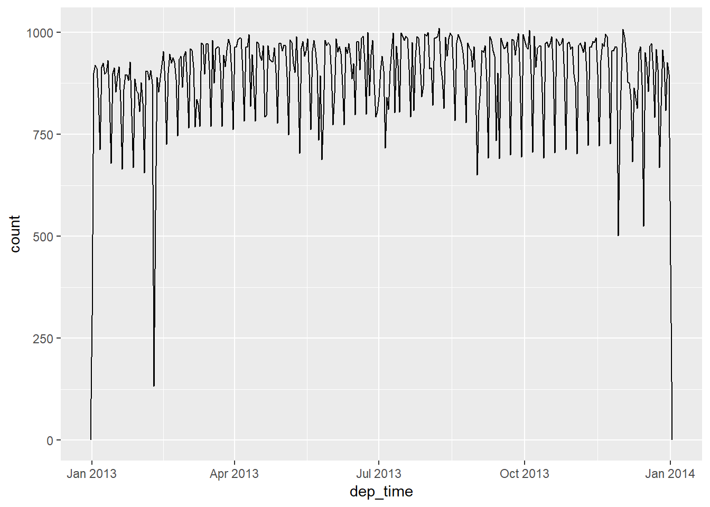
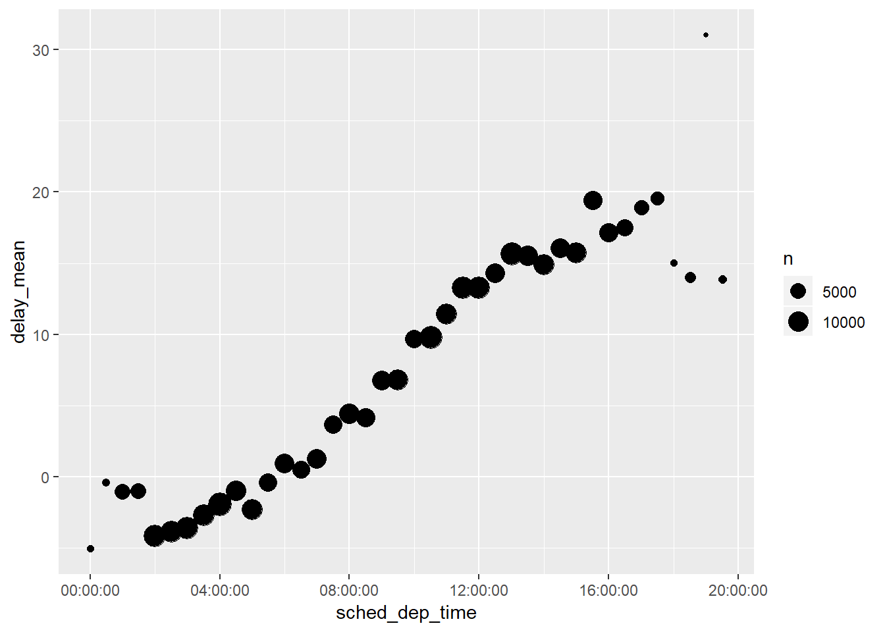
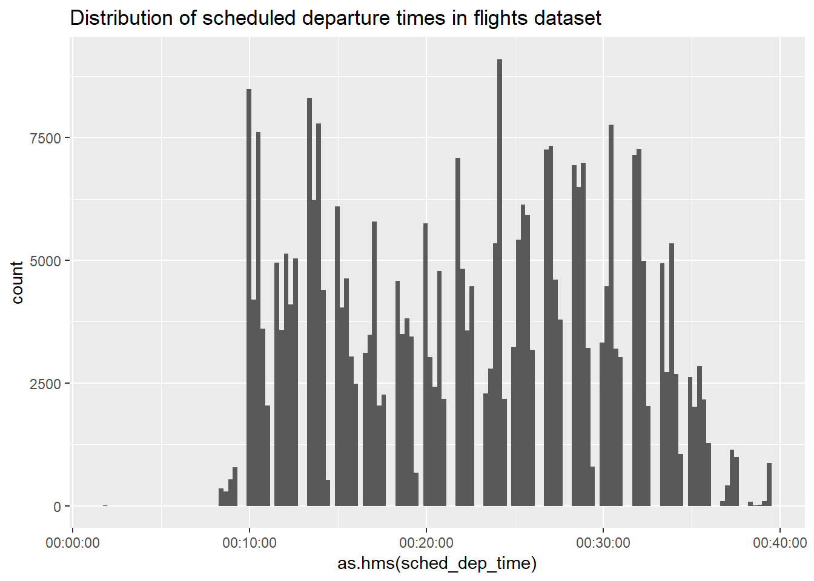

Chapter 15 ch. 16: Dates and times
todayget current datenowget current date-timeymd_hmsone example of straight-forward set-of of functions that take either strings or unquoted numbers and output dates or date-timesmake_datetimecreate date-time from individual components, e.g. make_datetime(year, month, day, hour, minute)as_date_timeandas_datelet you switch between date-time and dates, e.g.as_datetime(today())oras_date(now())- Accessor functions let you pull out components from an existing date-time:
year,month,mday,yday,wday,hour,minute,secondmonthandwdayhavelabel = TRUEto pull the abbreviated name rather than the number, and pull full name withabbr = FALSE
- You can also use these to set particular components
year(datetime) <- 2020
updateallows you to specify multiple values at one time, e.g.update(datetime, year = 2020, month = 2, mday = 2, hour = 2)- When values are too big they roll-over e.g.
update(ymd("2015-02-01"), mday = 30)will become ‘2015-03-02’
- When values are too big they roll-over e.g.
- Rounding functions to nearest unit of time
floor_date,round_date,ceiling_date
as.durationconvert diff-time to a duration- Durations (can add and multiply):
dseconds,dhours,ddays,dweeks,dyears
- Periods (can add and multiply), more likely to do what you expect than duration:
seconds,minutes,hours,days,weeks,months
- Interval is a duration with a starting point, making it precise and possible to determine EXACT length
- e.g.
(today() %--% next_year) / ddays(1)to find exact duration
- e.g.
Sys.timezoneto see what R thinks your current time zone istz =arg inymd_hmslet’s you change printing behavior (not underlying value, as assumes UTC unless changed)with_tzallows you to print an existing date-time object to a specific other timezoneforce_tzwhen have an object that’s been labeled with wrong time-zone and need to fix it
15.1 16.2: Creating date/times
Note that 1 in date-times is treated as 1 - second in numeric contexts, so example below sets binwidth = 86400 to specify 1 day
make_datetime_100 <- function(year, month, day, time) {
make_datetime(year, month, day, time %/% 100, time %% 100)
}
flights_dt <- flights %>%
filter(!is.na(dep_time), !is.na(arr_time)) %>%
mutate_at(c("dep_time", "arr_time", "sched_dep_time", "sched_arr_time"), funs(make_datetime_100(year, month, day, .))) %>%
select(origin, dest, ends_with("delay"), ends_with("time"))## Warning: funs() is soft deprecated as of dplyr 0.8.0
## please use list() instead
##
## # Before:
## funs(name = f(.)
##
## # After:
## list(name = ~f(.))
## This warning is displayed once per session.
15.1.1 16.2.4
What happens if you parse a string that contains invalid dates?
## Warning: 1 failed to parse.## [1] "2010-10-10" NA- Outputs an NA and sends warning of number that failed to parse
What does the
tzoneargument totoday()do? Why is it important?- Let’s you specify timezones, may be different days depending on location
## [1] "2019-05-28"## [1] "2019-05-28 13:41:49 MST"Use the appropriate lubridate function to parse each of the following dates:
d1 <- "January 1, 2010" d2 <- "2015-Mar-07" d3 <- "06-Jun-2017" d4 <- c("August 19 (2015)", "July 1 (2015)") d5 <- "12/30/14" # Dec 30, 2014## [1] "2010-01-01"## [1] "2015-03-07"## [1] "2017-06-06"## [1] "2015-08-19" "2015-07-01"## [1] "2014-12-30"
15.2 16.3: Date-time components
This allows you to plot the number of flights per week

15.2.1 16.3.4
How does the distribution of flight times within a day change over the course of the year?
Median flight time by day
flights_dt %>% transmute(quarter_dep = quarter(dep_time) %>% factor(), day_dep = as_date(dep_time), dep_time = as.hms(dep_time)) %>% group_by(quarter_dep, day_dep) %>% summarise(day_median = median(dep_time)) %>% ungroup() %>% ggplot(aes(x = day_dep, y = day_median)) + geom_line(aes(colour = quarter_dep, group = 1)) + labs(title = "Median flight times by day, coloured by quarter", subtitle = "Typical flight times change with daylight savings times")+ geom_vline(xintercept = ymd("20130310"), linetype = 2)+ geom_vline(xintercept = ymd("20131103"), linetype = 2)
- First couple and last couple months tend to have slightly earlier start times
Quantiles of flight times by month
flights_dt %>% transmute(month_dep = month(dep_time, label = TRUE), quarter_dep = quarter(dep_time) %>% factor(), wk_dep = week(dep_time), dep_time = as.hms(dep_time)) %>% group_by(month_dep, wk_dep) %>% ungroup() %>% ggplot(aes(x = month_dep, y = dep_time, group = month_dep)) + geom_boxplot()
- Reinforces prior plot, shows that first couple and last couple months of year tend to have slightly higher proportion of flights earlier in day
Weekly flight proportions by 4 hour blocks
flights_dt %>% transmute(month_dep = month(dep_time, label = TRUE), wk_dep = week(dep_time), dep_time_4hrs = floor_date(dep_time, "4 hours"), hour_dep_4hrs = hour(dep_time_4hrs) %>% factor) %>% count(wk_dep, hour_dep_4hrs) %>% group_by(wk_dep) %>% mutate(wk_tot = sum(n), wk_prop = round(n / wk_tot, 3)) %>% ungroup() %>% ggplot(aes(x = wk_dep, y = wk_prop)) + geom_col(aes(fill = hour_dep_4hrs))
- Last week of the year have a lower proportion of late flights, and a higher proportion of morning flights
See 16.3.4.1 for a few other plots I looked at.
Compare
dep_time,sched_dep_timeanddep_delay. Are they consistent? Explain your findings.flights_dt %>% mutate(dep_delay_check = (dep_time - sched_dep_time) / dminutes(1), same = dep_delay == dep_delay_check, difference = dep_delay_check - dep_delay) %>% filter(abs(difference) > 0)## # A tibble: 1,205 x 12 ## origin dest dep_delay arr_delay dep_time sched_dep_time ## <chr> <chr> <dbl> <dbl> <dttm> <dttm> ## 1 JFK BWI 853 851 2013-01-01 08:48:00 2013-01-01 18:35:00 ## 2 JFK SJU 43 36 2013-01-02 00:42:00 2013-01-02 23:59:00 ## 3 JFK SYR 156 154 2013-01-02 01:26:00 2013-01-02 22:50:00 ## 4 JFK SJU 33 22 2013-01-03 00:32:00 2013-01-03 23:59:00 ## 5 JFK BUF 185 172 2013-01-03 00:50:00 2013-01-03 21:45:00 ## 6 JFK BQN 156 143 2013-01-03 02:35:00 2013-01-03 23:59:00 ## 7 JFK SJU 26 23 2013-01-04 00:25:00 2013-01-04 23:59:00 ## 8 JFK PWM 141 125 2013-01-04 01:06:00 2013-01-04 22:45:00 ## 9 JFK PSE 15 18 2013-01-05 00:14:00 2013-01-05 23:59:00 ## 10 JFK FLL 127 130 2013-01-05 00:37:00 2013-01-05 22:30:00 ## # ... with 1,195 more rows, and 6 more variables: arr_time <dttm>, ## # sched_arr_time <dttm>, air_time <dbl>, dep_delay_check <dbl>, ## # same <lgl>, difference <dbl>- They are except in the case when it goes over a day, the day is not pushed forward so it counts it as being 24 hours off
Compare
air_timewith the duration between the departure and arrival. Explain your findings. (Hint: consider the location of the airport.)flights_dt %>% mutate(air_time_check = (arr_time - dep_time) / dminutes(1)) %>% select(air_time_check, air_time, dep_time, arr_time, everything())## # A tibble: 328,063 x 10 ## air_time_check air_time dep_time arr_time origin ## <dbl> <dbl> <dttm> <dttm> <chr> ## 1 193 227 2013-01-01 05:17:00 2013-01-01 08:30:00 EWR ## 2 197 227 2013-01-01 05:33:00 2013-01-01 08:50:00 LGA ## 3 221 160 2013-01-01 05:42:00 2013-01-01 09:23:00 JFK ## 4 260 183 2013-01-01 05:44:00 2013-01-01 10:04:00 JFK ## 5 138 116 2013-01-01 05:54:00 2013-01-01 08:12:00 LGA ## 6 106 150 2013-01-01 05:54:00 2013-01-01 07:40:00 EWR ## 7 198 158 2013-01-01 05:55:00 2013-01-01 09:13:00 EWR ## 8 72 53 2013-01-01 05:57:00 2013-01-01 07:09:00 LGA ## 9 161 140 2013-01-01 05:57:00 2013-01-01 08:38:00 JFK ## 10 115 138 2013-01-01 05:58:00 2013-01-01 07:53:00 LGA ## # ... with 328,053 more rows, and 5 more variables: dest <chr>, ## # dep_delay <dbl>, arr_delay <dbl>, sched_dep_time <dttm>, ## # sched_arr_time <dttm>- Initial check is off, so need to take into account the time-zone and difference from NYC, so join timezone document
flights_dt %>% left_join(select(nycflights13::airports, dest = faa, tz), by = "dest") %>% mutate(arr_time_new = arr_time - dhours(tz + 5)) %>% mutate(air_time_tz = (arr_time_new - dep_time) / dminutes(1), diff_Airtime = air_time_tz - air_time) %>% select( origin, dest, tz, contains("time"), -(contains("sched")))## # A tibble: 328,063 x 9 ## origin dest tz dep_time arr_time air_time ## <chr> <chr> <dbl> <dttm> <dttm> <dbl> ## 1 EWR IAH -6 2013-01-01 05:17:00 2013-01-01 08:30:00 227 ## 2 LGA IAH -6 2013-01-01 05:33:00 2013-01-01 08:50:00 227 ## 3 JFK MIA -5 2013-01-01 05:42:00 2013-01-01 09:23:00 160 ## 4 JFK BQN NA 2013-01-01 05:44:00 2013-01-01 10:04:00 183 ## 5 LGA ATL -5 2013-01-01 05:54:00 2013-01-01 08:12:00 116 ## 6 EWR ORD -6 2013-01-01 05:54:00 2013-01-01 07:40:00 150 ## 7 EWR FLL -5 2013-01-01 05:55:00 2013-01-01 09:13:00 158 ## 8 LGA IAD -5 2013-01-01 05:57:00 2013-01-01 07:09:00 53 ## 9 JFK MCO -5 2013-01-01 05:57:00 2013-01-01 08:38:00 140 ## 10 LGA ORD -6 2013-01-01 05:58:00 2013-01-01 07:53:00 138 ## # ... with 328,053 more rows, and 3 more variables: arr_time_new <dttm>, ## # air_time_tz <dbl>, diff_Airtime <dbl>How does the average delay time change over the course of a day? Should you use
dep_timeorsched_dep_time? Why?flights_dt %>% mutate(sched_dep_time = as.hms(floor_date(sched_dep_time, "30 mins"))) %>% group_by(sched_dep_time) %>% summarise(delay_mean = mean(arr_delay, na.rm = TRUE), n = n(), n_na = sum(is.na(arr_delay)) / n, delay_median = median(arr_delay, na.rm = TRUE)) %>% ggplot(aes(x = sched_dep_time, y = delay_mean, size = n)) + geom_point()
- It goes-up throughout the day
- Use
sched_dep_timebecause it has the correct day
On what day of the week should you leave if you want to minimise the chance of a delay?
flights_dt %>% mutate(weekday = wday(sched_dep_time, label = TRUE)) %>% group_by(weekday) %>% summarise(prop_delay = sum(dep_delay > 0) / n())## # A tibble: 7 x 2 ## weekday prop_delay ## <ord> <dbl> ## 1 Sun 0.383 ## 2 Mon 0.401 ## 3 Tue 0.364 ## 4 Wed 0.372 ## 5 Thu 0.431 ## 6 Fri 0.425 ## 7 Sat 0.348- wknd has a slightly lower proportion of flights delayed (Thursday has the worst)
What makes the distribution of
diamonds$caratandflights$sched_dep_timesimilar?ggplot(diamonds, aes(x = carat)) + geom_histogram(bins = 500)+ labs(title = "Distribution of carat in diamonds dataset")
ggplot(flights, aes(x = as.hms(sched_dep_time))) + geom_histogram(bins = 24*6)+ labs(title = "Distribution of scheduled departure times in flights dataset")
- Both have gaps and peaks at ‘attractive’ values
Confirm my hypothesis that the early departures of flights in minutes 20-30 and 50-60 are caused by scheduled flights that leave early. Hint: create a binary variable that tells you whether or not a flight was delayed.
mutate(flights_dt, mins_dep = minute(dep_time), mins_sched = minute(sched_dep_time), delayed = dep_delay > 0) %>% group_by(mins_dep) %>% summarise(prop_delayed = sum(delayed) / n()) %>% ggplot(aes(x = mins_dep, y = prop_delayed)) + geom_line()
- Consistent with above hypothesis
15.3 16.4: Time spans
- durations, which represent an exact number of seconds.
- periods, which represent human units like weeks and months.
- intervals, which represent a starting and ending point.

Permitted arithmetic operations between different data types
Periods example, using durations to fix oddity of problem when flight arrives overnight
flights_dt <- flights_dt %>%
mutate(
overnight = arr_time < dep_time,
arr_time = arr_time + days(overnight * 1),
sched_arr_time = sched_arr_time + days(overnight * 1)
)Intervals example to get precise number of days dependent on specific time
## [1] 366To find out how many periods fall in an interval, need to use integer division
## [1] 36615.3.1 16.4.5
Why is there
months()but nodmonths()?- the duration varies from month to month
Explain
days(overnight * 1)to someone who has just started learning R. How does it work?- this used in the example above makes it such that if
overnightis TRUE, it will return the same time period but one day ahead, if false, does not change (as is adding 0 days)
- this used in the example above makes it such that if
- Create a vector of dates giving the first day of every month in 2015.
## [1] Thu Sun Sun Wed Fri Mon Wed Sat Tue Thu Sun Tue ## Levels: Sun < Mon < Tue < Wed < Thu < Fri < Sat- Create a vector of dates giving the first day of every month in the current year.
x <- today() %>% update(month = 1, mday = 1) mons <- c(0:11) (x + months(mons)) %>% wday(label=TRUE)## [1] Tue Fri Fri Mon Wed Sat Mon Thu Sun Tue Fri Sun ## Levels: Sun < Mon < Tue < Wed < Thu < Fri < SatWrite a function that given your birthday (as a date), returns how old you are in years.
birthday_age <- function(birthday) { (ymd(birthday) %--% today()) %/% years(1) } birthday_age("1989-09-07")## [1] 29- Why can’t
(today() %--% (today() + years(1)) / months(1)work?- Can’t add and subtract intervals